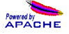

|
|
||
What is FreeBSD?FreeBSD is an advanced BSD UNIX operating system for "PC-compatible" computers, developed and maintained by a large team of individuals.
FreeBSD offers an exceptional combination of features.FreeBSD offers many features today which are still missing in other operating systems, even some of the best commercial ones. Advanced features for performance, security, and even binary compatibility with other popular operating systems.
FreeBSD specializes in internet solutions.FreeBSD makes an ideal Internet server or desktop system. It provides robust network services, even under the heaviest of loads, and uses memory efficiently to maintain good response times for hundreds, or even thousands, of simultaneous user processes.
FreeBSD is free.While you might expect an operating system with these features to sell for a high price, FreeBSD is available free of charge and comes with full source code. If you would like to try it out, more information is available.
Register to receive the
FreeBSD Newsletter.
Gallery of FreeBSD related publications.
|
FreeBSD is easy to install.FreeBSD can be installed from a variety of media including CD-ROM, floppy disk, magnetic tape, an MS-DOS partition, or if you have a network connection (even a dial-up PPP to an Internet provider), you can install it directly over anonymous FTP or NFS. All you need is a single 1.44MB boot floppy and these directions.
FreeBSD can run a huge variety of applications.The quality of FreeBSD combined with today's low-cost, high-speed PC hardware makes FreeBSD a very economical alternative to commercial UNIX workstations. It is well-suited for a great number of applications.
|
|
|
 |

|
|
Page design Megan McCormack www@FreeBSD.ORG About this Web Site $Date: 1997-07-01 03:52:03 $ |
Copyright © 1995-1997 FreeBSD Inc. All rights reserved. |